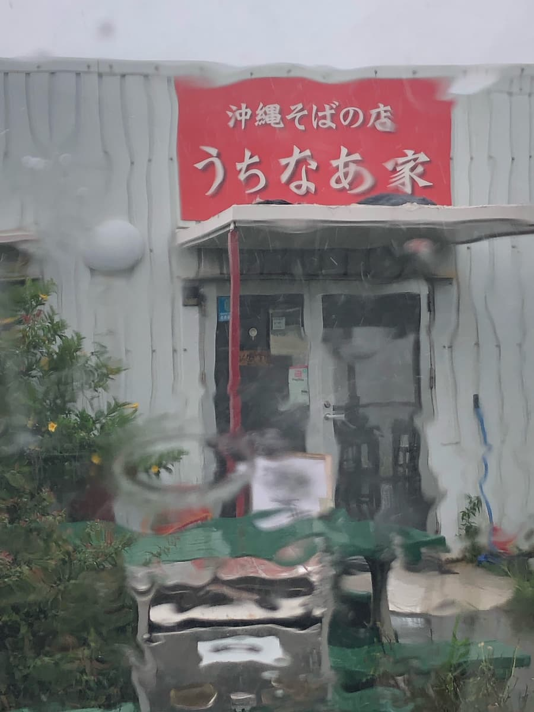
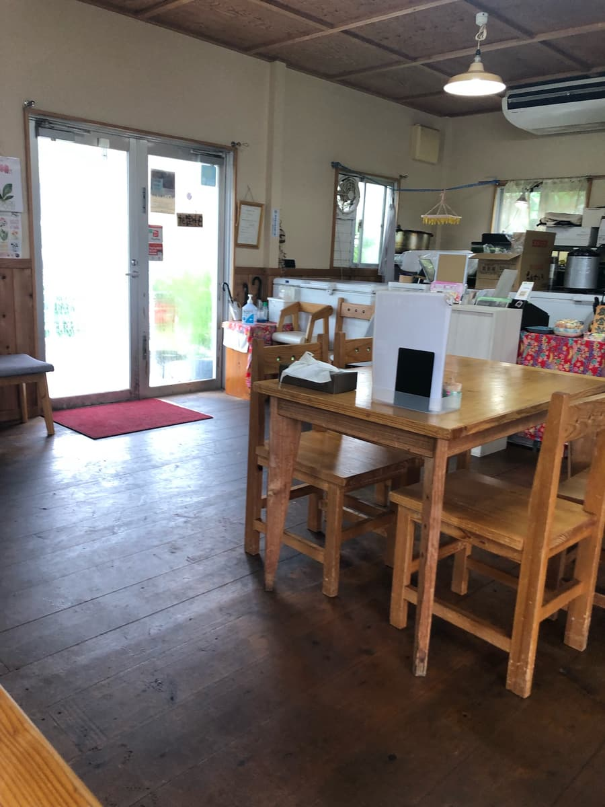
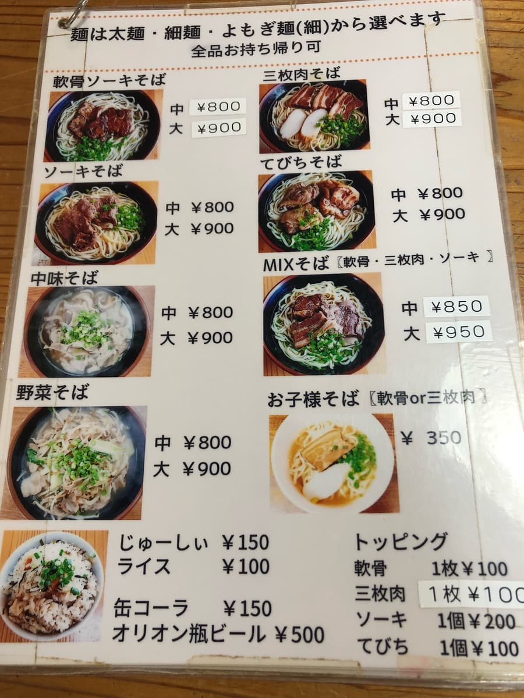
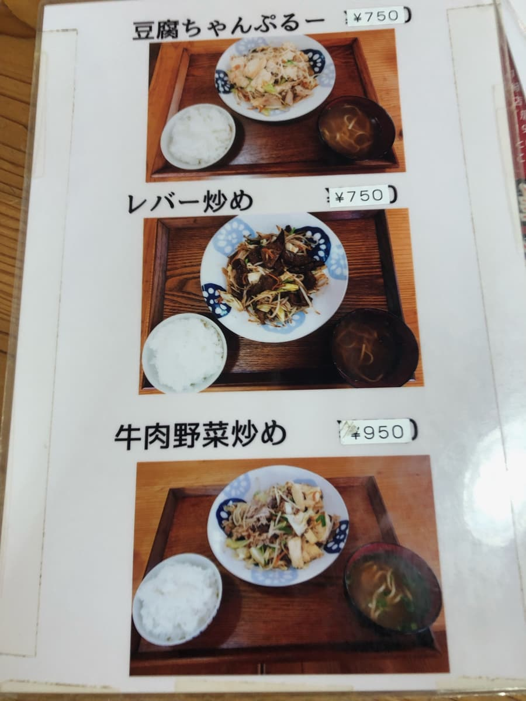
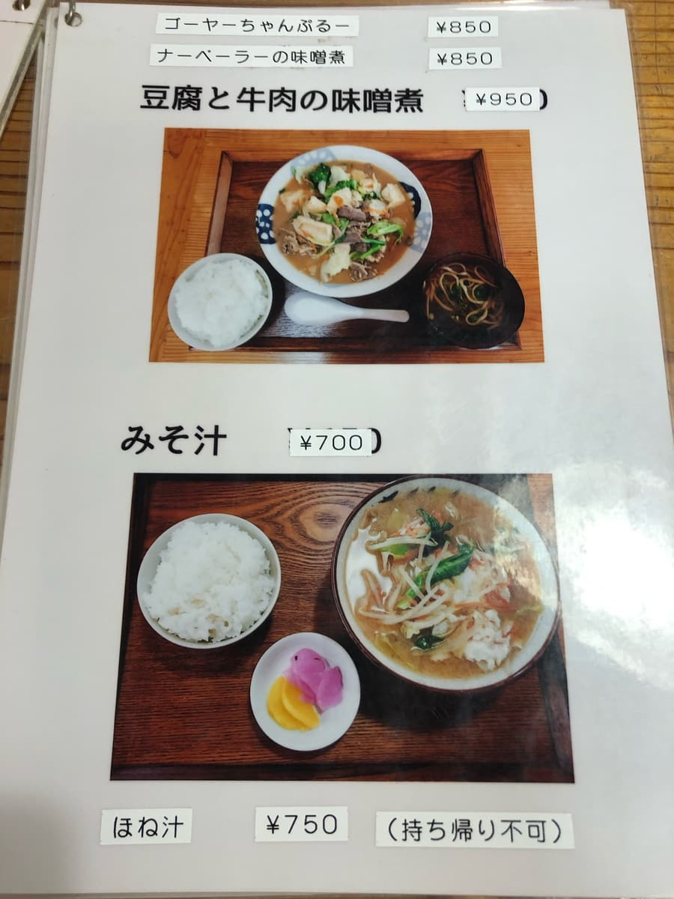
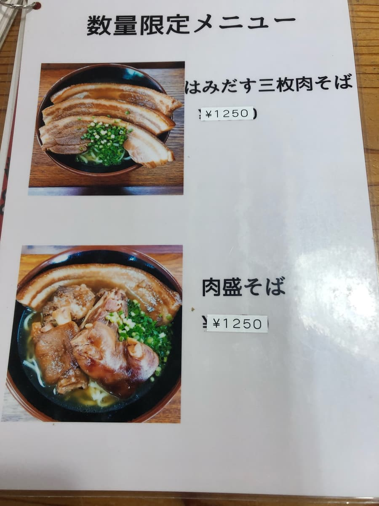
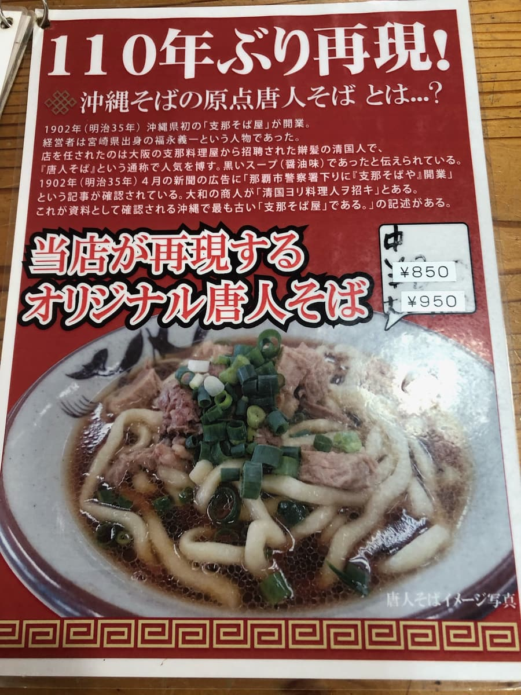
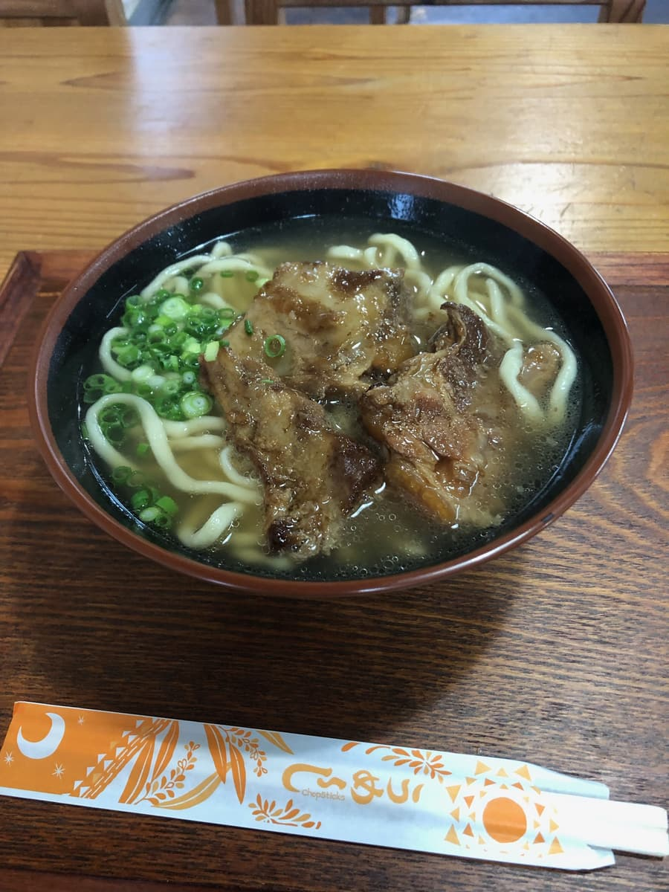
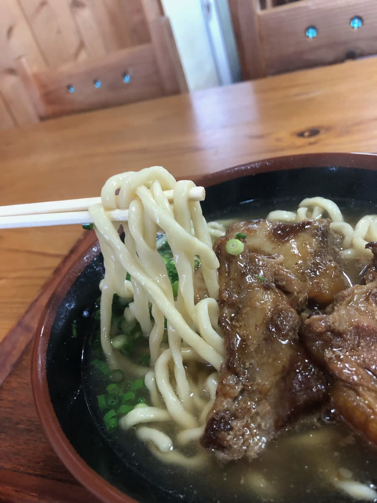

※這篇文章是用AI（Claude 3.5 Sonnet）寫的，部分有我自己補充笑
2024.8吃的😆
其實這天是好市多南城市店的開幕日，我什麼都沒想就輕鬆出發，結果從途中的周邊道路就被捲入大塞車(^0^;)💦 而且還下傾盆大雨(^0^;) 在這種情況下，我乾脆豁出去，臨時改變計畫，走進了前往途中發現的這家沖繩麵店（笑）。就這樣，決定造訪位於南城市玉城的「沖繩家」。

一到店，首先映入眼簾的就是鮮紅的招牌！上面寫著「沖繩麵之店 沖繩家」，讓人有點興奮呢😆 後來Google了一下，原來這家店是在沖繩各地都有的連鎖店。應該是受到在地人和觀光客喜愛的感覺吧？

一進店，是能感受到木頭溫暖、沉穩的氛圍。有吧台座位和桌位，是寬敞舒適的空間。





看菜單，有各種不同的沖繩麵，這次點了「軟骨排骨麵」。

然後，終於登場的「軟骨排骨麵」！光看外觀就很有份量，這讓人期待升高呢😋
首先從湯開始。呼〜地喝一口，豬骨和柴魚的平衡感覺不錯。不過，豬骨的風味感覺稍微重一點。普通好吃的感覺。

接著注意到的，果然就是名字裡的軟骨排骨。從外觀看就軟嫩入口即化的樣子！實際吃吃看，幾乎都燉得軟嫩入口即化，但有些地方也有偏筋的部分。這可能是好惡分歧的地方吧。
麵選了粗麵，這個相當軟。滑溜溜的很好入喉，但我覺得可以再有彈性一點。
評分（9分/15分）：老實說，「沖繩家」的沖繩麵雖然不是讓人特別驚豔的味道，但普通好吃。就在2024.8.24開幕的好市多附近，推薦逛完好市多回程時來吃一次看看😄
麵：★★★☆☆（3）
湯頭：★★★☆☆（3）
配料：★★★☆☆（3）